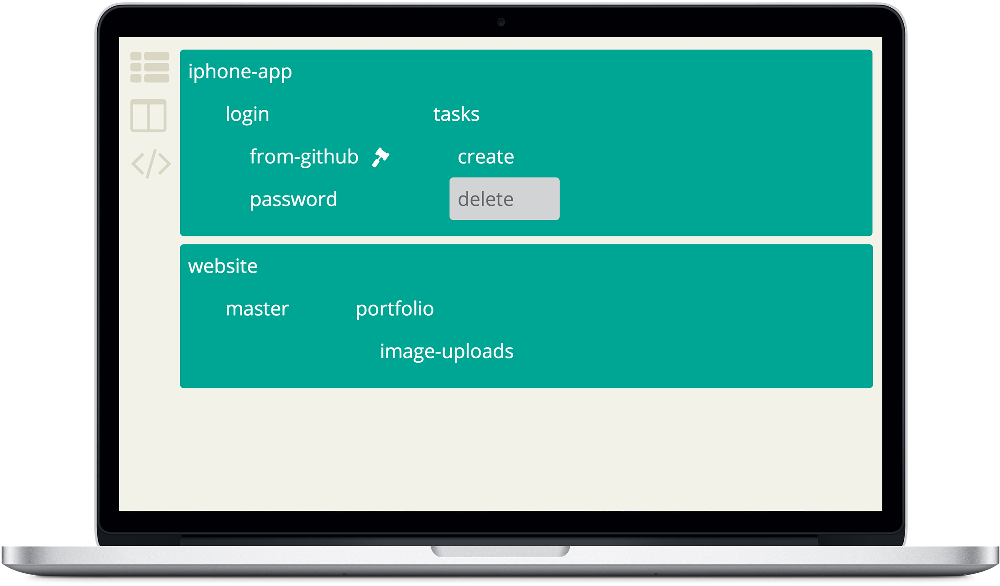

Custom boards
Create dynamic boards based on any information you'd like
Delivering the right information at the right time in a lovely package for you and your team
Ideas are born, prioritized, analyzed, designed, implemented and shipped. Perspective lets you follow them from start to finish in views (perspectives) that's tailored for each stakeholder and process ceremonies
Get a new perspective on your process by aggregating information from Jira, Jenkins, dev servers and more
Software development tools are often made for developers only. We're also designing for testers, designers, leaders and all stakeholders on a team
Perspective is open-source, free to use and modify
So simple, it makes JIRA jealous
Create dynamic boards based on any information you'd like
Tasks are extensible. Add build information, documentation, tests script and everyting you and your team need
Want to show which server a task is deployed on? Its last sucessful build? No problem, just pull in information from other perspective modules and external systems
Because you like to follow your feature from feature branches, to continous integration and deployment
Establish a naming convention and get your feature branches rendered as
trees. In the image above we've used iphone-app_login_from-github and
iphone-app_login_password
With perspective-jenkins you get color coding on your feature branches. And a even a hammer when it builds!
Push or pull information from your development servers into the build screen. Show notifications when new builds or deploys start.